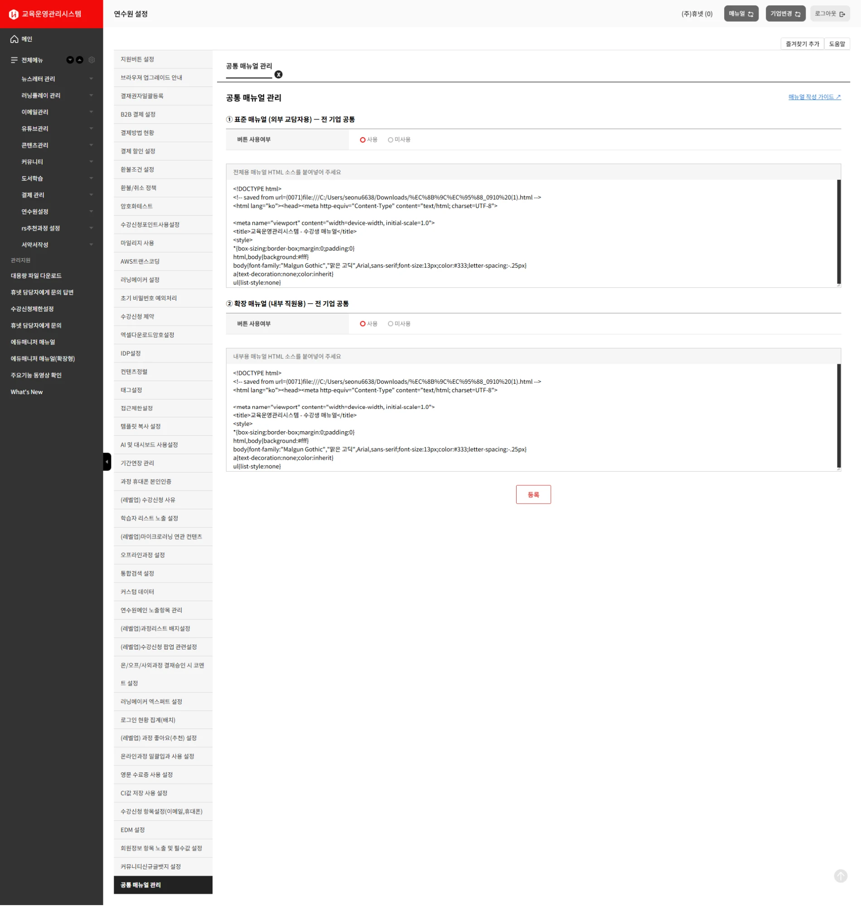
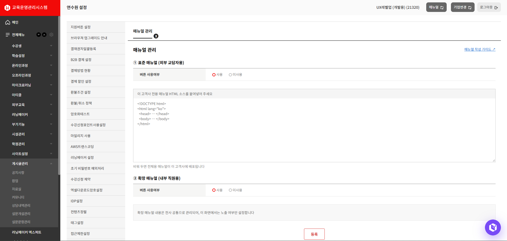

운영팀 업무 가이드
매뉴얼 등록과 노출 관리는 연수원 설정(companySetting/v2) 한 곳에서 합니다. 어느 기업에서 무엇을 등록하고, 등록한 것이 어느 페이지에 나오는지 정리했습니다.
연수원 설정의 매뉴얼 관리 항목에서 할 일은 이것이 전부입니다. 매뉴얼 페이지에서는 아무것도 고칠 수 없습니다.
버튼 노출 유무
버튼 사용여부를 사용 / 미사용 중에서 고릅니다. 매뉴얼로 들어가는 버튼·메뉴가 보일지를 정합니다.
HTML 붙여넣기
매뉴얼 HTML 소스를 그대로 복사해 입력창에 붙여넣습니다. 파일 업로드나 주소 입력은 없습니다.
등록
등록을 누르면 그 기업에 저장되고 즉시 반영됩니다. 별도 배포 절차는 없습니다.
이 세 가지를 0번 기업과 개별 기업 두 자리에서 합니다. 0번 기업에 등록한 것이 공통 매뉴얼이 되고, 개별 기업에 등록한 것은 그 고객사에만 쓰입니다.
아래는 테스트 서버 주소입니다.
연수원 설정 0번 기업개별 기업
이 화면의 좌측 설정 목록 안에 매뉴얼 관리 항목이 있습니다. 로그인한 기업이 곧 작업 대상이라, 열기 전에 오른쪽 위 기업명을 확인합니다.
https://testedumanager.hunet.co.kr/companySetting/v2#50952456외부용 매뉴얼 페이지 표준형
상단 헤더 매뉴얼 버튼으로 열립니다. 고객사 교육담당자가 보는 화면입니다.
https://testedumanager.hunet.co.kr/Common/EdmManual내부용 매뉴얼 페이지 확장형
좌측 사이드바 에듀매니저 매뉴얼(확장형)으로 열립니다. 내부 IP에서만 열립니다.
https://testedumanager.hunet.co.kr/Common/EdmManualExtended매뉴얼 페이지 주소에는 기업코드가 없습니다. 로그인한 기업이 어느 매뉴얼을 보여줄지 정하므로, 상단 기업변경으로 기업을 바꾸면 같은 주소에서 그 기업 매뉴얼이 나옵니다.
HTML이 길면 관리 화면 로딩이 느립니다
연수원 설정은 등록된 HTML 소스를 입력창에 통째로 불러옵니다. 소스가 길수록 화면이 뜨는 데 시간이 걸리니, 화면이 바로 안 열려도 기다려 주세요. 매뉴얼 페이지 자체는 영향을 받지 않습니다.
여기서 등록한 것이 공통 매뉴얼입니다. 외부용·내부용 둘 다 이 화면에서 넣습니다.
0번 기업으로 로그인하면 항목명이 공통 매뉴얼 관리로 보입니다.

그 고객사에만 쓰이는 매뉴얼입니다. 외부용만 등록할 수 있습니다.
일반 고객사로 로그인하면 항목명이 매뉴얼 관리로 보입니다.

내부용은 0번 기업에서만 등록합니다
확장형 매뉴얼은 전사 공통 문서 하나입니다. 개별 기업 화면에서는 내용을 넣을 수 없고 버튼 노출 유무만 관리합니다. 내용을 고치려면 0번 기업으로 전환해야 합니다.
외부용은 개별 기업 매뉴얼이 우선입니다. 등록돼 있지 않을 때만 0번 기업 매뉴얼이 나옵니다.
| 0번 기업 HTML | 개별 기업 HTML | 교담자에게 나오는 것 | 비고 |
|---|---|---|---|
| 있음 | 있음 | 개별 기업 매뉴얼 | 0번을 고쳐도 이 고객사는 그대로 |
| 있음 | 없음 | 0번 기업 매뉴얼 | 대부분의 고객사가 여기 |
| 없음 | 있음 | 개별 기업 매뉴얼 | 0번이 아직 없어도 제 것을 봄 |
| 없음 | 없음 | 빈 화면 안내 | 「매뉴얼을 준비 중입니다」 |
내부용(확장형)은 0번 기업 하나뿐이라 갈리지 않습니다 — 등록돼 있으면 그것이, 없으면 같은 빈 화면 안내가 나옵니다.
버튼은 사용인데 보여줄 HTML이 하나도 없는 상태로 등록하려 하면 먼저 알려줍니다.
등록된 매뉴얼 내용이 없습니다.
이대로 저장하면 교담자에게 빈 화면이 보입니다.
저장하시겠습니까?
내용을 아직 준비 중이라 자리만 열어 두는 것이라면 그대로 저장해도 됩니다. 교담자에게는 빈 화면 대신 「매뉴얼을 준비 중입니다」 안내가 나옵니다. 내용이 없다고 버튼이 저절로 감춰지지는 않으므로, 버튼을 안 보이게 하려면 버튼 사용여부를 미사용으로 직접 바꿉니다.
HTML을 어떻게 쓰는지는 별도 문서로 관리합니다. 연수원 설정의 매뉴얼 관리 화면 우측 상단에 있는 매뉴얼 작성 가이드 ↗ 링크를 누르면 컨플루언스 문서가 새 탭으로 열립니다.
https://ihunet.atlassian.net/wiki/spaces/AHA/pages/5384437766/w